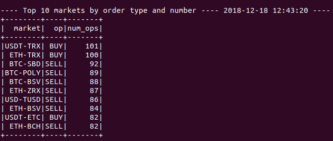
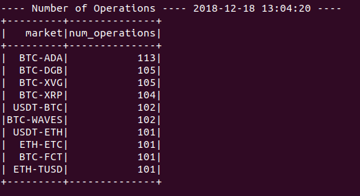

CDA consiste de dos partes:
Algoritmo data_retriever.py: hace una petición a la API de Bittrex para obtener las últimas operaciones de cada mercado en formato JSON. La respuesta se procesa y se manda al Spark utilizando un socket (localhost:9009).
Algoritmos de Spark: reciben la información recibida por el socket y procesan los datos.

